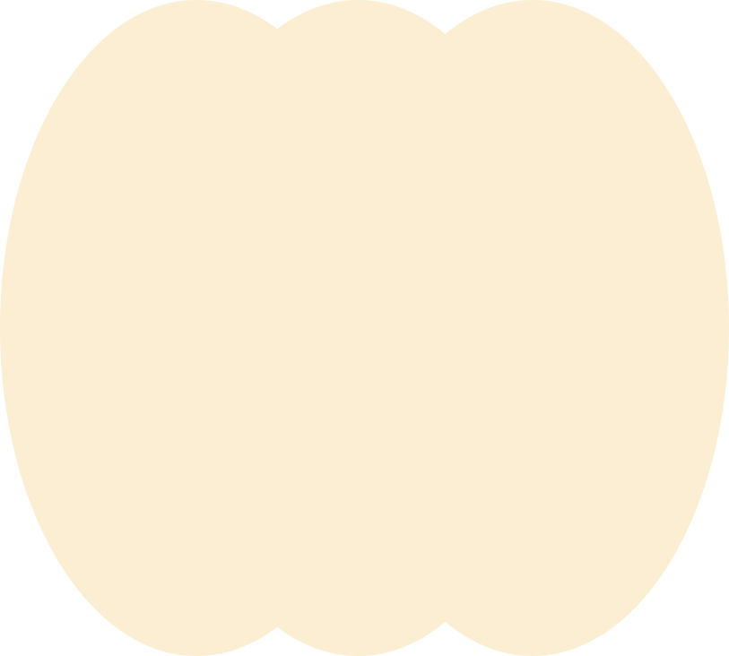

Французский
до суперуровня:
это возможно?
От «меня понимают» к свободной речи: разбираемся, что означают C1 и C2 и как превратить большую цель в понятную практику.

От «меня понимают» к свободной речи: разбираемся, что означают C1 и C2 и как превратить большую цель в понятную практику.